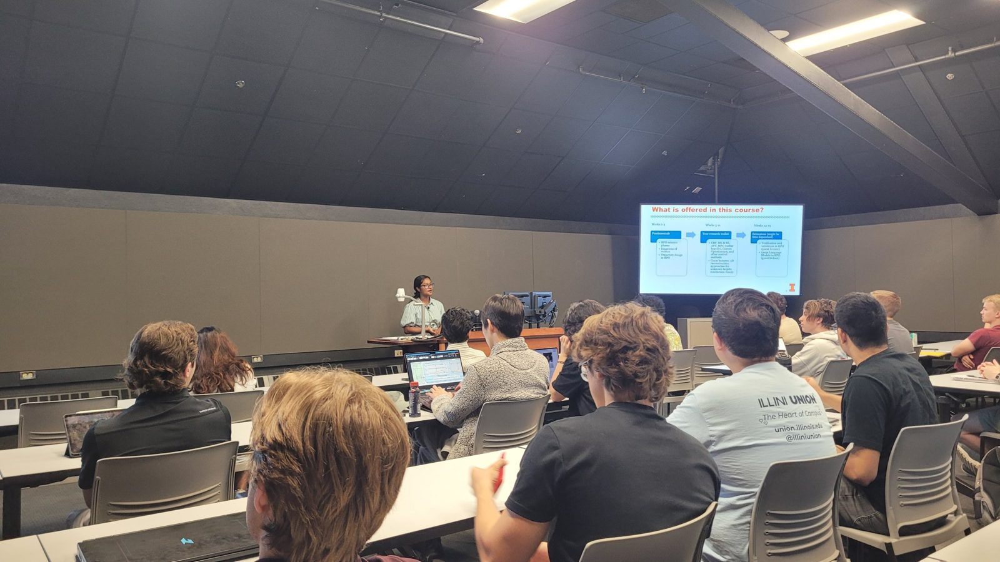
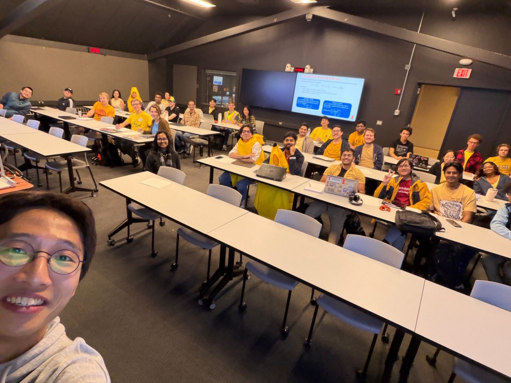

Courses
Teaching
New course
AE 598: Spacecraft Proximity Operations
AE 598 is a new course on spacecraft rendezvous and proximity operations (RPO), taught by Prof. Minduli Wijayatunga. It starts from the fundamentals of RPO missions and builds up to the guidance and control methods used in current research, with guest lectures on emerging topics.

What the course covers
Weeks 1–4
Fundamentals
- RPO mission phases
- Equations of motion
- Trajectory design in RPO
Weeks 5–11
Your research toolkit
- Control barrier functions, machine learning and reinforcement learning, artificial potential fields, model predictive control, convex optimization, and other control methods
- Guest lectures: 3D reconstruction approaches for unknown targets, contraction theory
Weeks 12–15
Extensions
- Verification and validation in RPO (guest lecture)
- Large language models in RPO (guest lecture)

Spring 2027
AE 508: Optimal Space Trajectories
In spring 2027 Prof. Wijayatunga teaches AE 508, the department's graduate course on optimal spacecraft trajectories. It covers orbital transfer, intercept and rendezvous, for both high-thrust (impulsive) and low-thrust (continuous) propulsion, including primer vector theory.
Teaching grant
GATE grant: AI-based course readiness self-assessment
Prof. Wijayatunga received a Grants for Advancement of Teaching in Engineering (GATE) award from The Grainger College of Engineering and its Academy for Excellence in Engineering Education. The project is building an AI-based self-assessment tool that lets students find out, before a course starts, whether they are prepared for it. The tool will be piloted in AE 508.